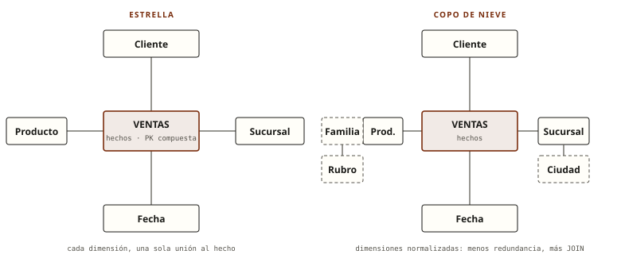

Lección 51 · Unidad 9 · Data warehouse
Modelo estrella, copo de nieve, Inmon y Kimball
Cómo se diseñan las tablas de un DW: una tabla de hechos en el centro, dimensiones a su alrededor, y dos escuelas que discuten cuánto normalizar.
Un esquema en estrella es un caso del modelo relacional con claves foráneas (lecciones 0005 y 0034): consultarlo es hacer JOIN del hecho con cada dimensión. Y el copo de nieve es aplicar normalización (0023) a las dimensiones.
01El esquema en estrella
"En el esquema de estrella, el centro de la estrella puede tener una tabla de hechos y varias tablas de dimensiones asociadas. Se conoce como esquema estelar ya que su estructura se asemeja a una estrella. Es el tipo más simple de esquema de Data Warehouse. También se conoce como Star Join Schema y está optimizado para consultar grandes conjuntos de datos."

La regla de las claves
"Las tablas de dimensiones tendrán siempre una clave primaria simple, mientras que en la tabla de hechos, la clave principal estará compuesta por las claves principales de las tablas dimensionales."
CLIENTE (Id_Cliente, Nombre, Ciudad)
PRODUCTO (Id_Producto, Nombre, Familia, Rubro)
FECHA (Id_Fecha, Anio, Mes, Trimestre)
VENTAS (Id_Cliente, Id_Producto, Id_Fecha, Unidades, Importe) -- hechos
Fijate que las claves de VENTAS son a la vez su clave primaria y claves
foráneas hacia cada dimensión. Lo que no es clave en el hecho (Unidades,
Importe) son las métricas, lo que se suma y se promedia. Es la misma
estructura que ya viste como tabla asociativa de una relación N:N (lección
0024).
02El copo de nieve
"Un esquema de copo de nieve es una extensión de un esquema de estrella y agrega dimensiones adicionales. La finalidad es normalizar las tablas y así reducir el espacio de almacenamiento al eliminar la redundancia de datos, pero tiene la contrapartida de generar peores rendimientos al tener que crear más tablas de dimensiones y más relaciones (JOINs)."
PRODUCTO (Id_Producto, Nombre, Id_Familia) ← ahora apunta a FAMILIA
FAMILIA (Id_Familia, Nombre, Id_Rubro)
RUBRO (Id_Rubro, Nombre)| Estrella | Copo de nieve | |
|---|---|---|
| Dimensiones | Una tabla por dimensión, desnormalizada | Divididas en varias tablas, normalizadas |
| Espacio | Más, por la redundancia | Menos: elimina la redundancia |
| Consultas | Más rápidas, menos JOINs | Más lentas, más JOINs |
| Complejidad | La más simple | Extensión de la estrella |
Las dos aparecen en la lección 0049 como esquemas típicos de un sistema ROLAP.
03Inmon contra Kimball
Dos formas de construir el DW, y el deck las llama arquitecturas: top-down (Inmon) y bottom-up (Kimball).
| Inmon · top-down | Kimball · bottom-up | |
|---|---|---|
| Punto de partida | Un repositorio central único: se construye un DW global y de ahí se nutren los Data Marts. | La necesidad de un departamento: se arman Data Marts a medida y se unen para formar el DW de la empresa. |
| Dirección | De lo global a lo departamental. | Del detalle de cada parte al sistema completo. |
| Modelo | Normalizado, con las tres formas normales. | Desnormalizado (esquema estrella). |
| Ventaja | Toda la empresa tiene la misma estructura; evita inconsistencias entre departamentos. | Cada departamento tiene independencia para crear su Data Mart, siguiendo un estándar común. |
| Riesgo | Hay que amoldarse a la estructura global. | Los Data Marts pueden diferir entre sí en aspectos que podrían ser comunes. |
| Conviene si… | Se quiere una visión global y hay que cuidar la integridad de los datos. | Se quiere analizar diferenciando los departamentos de la compañía. |
"A pesar de las diferencias las dos visiones tienen un mismo objetivo: tener un sistema de almacenamiento capaz de responder a todas las posibles respuestas que puedan surgir en la empresa."
En los diagramas del deck, Inmon dibuja Fuentes → ETL → Data Warehouse (normalizado, "CIF") → Data Marts → cubos; Kimball dibuja Fuentes → ETL → estrellas por área (ventas, finanzas, operaciones) → cubos, sin un almacén central normalizado.
04Práctica
En un esquema en estrella, ¿cómo es la clave primaria de la tabla de hechos?
El copo de nieve ahorra espacio al normalizar las dimensiones. ¿Qué cuesta a cambio?
Una metodología arranca con un almacén de datos global y normalizado, del que se nutren los data marts. ¿De quién es?
Una empresa quiere una visión global y cuidar especialmente la integridad de los datos. ¿Qué enfoque conviene según el deck?
Deck raw/Intro Datawarehouse .pptx: slides 29–32 (arquitecturas top-down y
bottom-up, Inmon y Kimball), 33 (modelo estrella) y 34 (copo de nieve). Las figuras
comparten el ejemplo de ventas por concesionario del deck; las tablas de arriba son una
versión mínima propia.
Soy tu profe acá. Dibujá la estrella de un negocio que conozcas (ventas, turnos, envíos) con su tabla de hechos y tres dimensiones, y marcá las claves. Pasámela y la reviso.